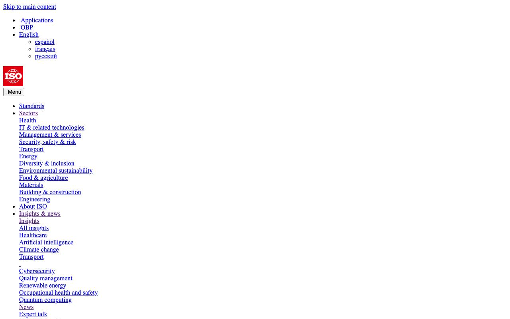
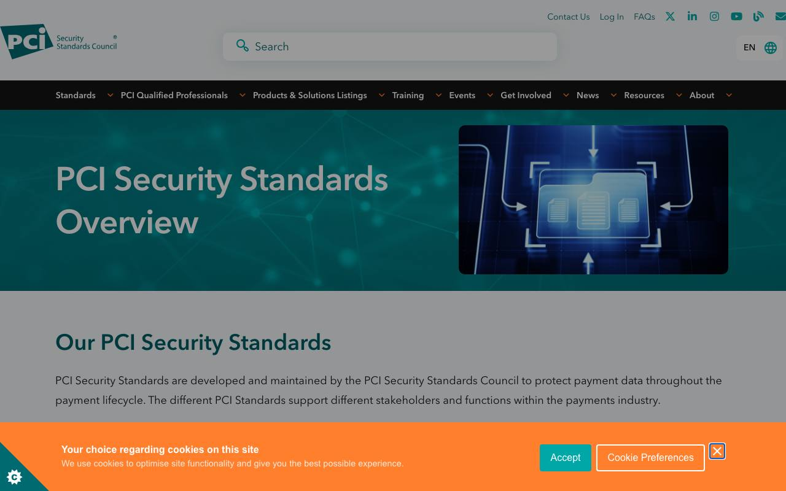
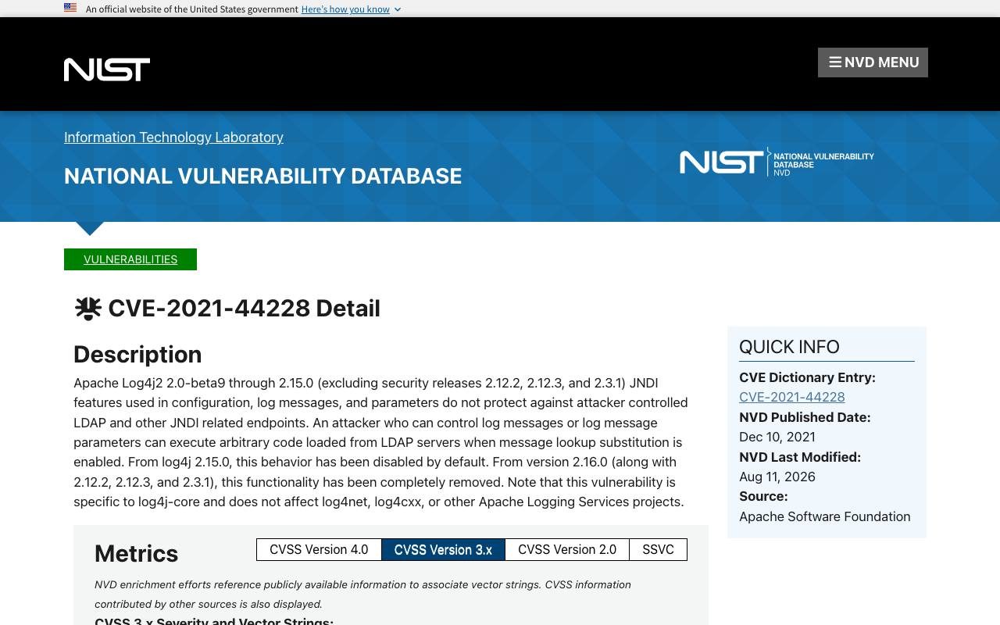
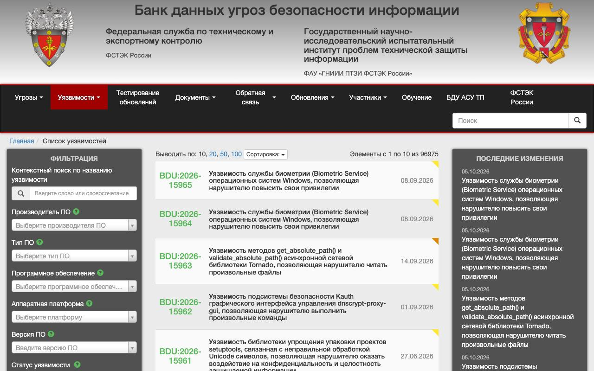

Справочник «Стандарты и сертификаты» · тема 3
Глава 6
Стандарты информационной
безопасности
Требования к защите информации записаны в международных и российских стандартах, а сведения об уязвимостях ведутся в общих перечнях. В главе разобраны семейство ISO/IEC 27000, российские стандарты ГОСТ Р 57580.1 и ГОСТ Р 56939, стандарт платёжных карт PCI DSS и обозначения уязвимостей.
- Документы
- ISO/IEC 27001, 27002, 27005, 27701 · ГОСТ Р 57580.1-2017 · ГОСТ Р 56939-2024 · PCI DSS · CVE, CVSS, CWE
- Уровень
- Средний
- Где встречается
- Требования заказчиков, банки, приём платежей, отчёты о проверках
- Зачем это знать
- Чтобы понимать, чего требует каждый стандарт и к кому он относится
§1Семейство ISO/IEC 27000
Система менеджмента информационной безопасности — принятый в организации порядок: кто оценивает риски, кто выбирает меры защиты, как проверяют их выполнение и как исправляют недостатки. Требования к такой системе задаёт ISO/IEC 27001.
| Стандарт | О чём | Для чего используют |
|---|---|---|
| ISO/IEC 27001 | требования к системе менеджмента информационной безопасности | по нему проводят сертификацию организации |
| ISO/IEC 27002 | описание мер защиты: в редакции 2022 года их 93, в четырёх группах | справочник мер при выполнении 27001 |
| ISO/IEC 27005 | управление рисками информационной безопасности | методика оценки рисков |
| ISO/IEC 27701 | управление защитой персональной информации | дополнение к 27001 для персональных данных |

В России действует ГОСТ Р ИСО/МЭК 27001-2021. Сертификат по 27001 подтверждает, что в организации работает система управления. Отсутствие утечек он не гарантирует.
§2Российские стандарты и акты
| Документ | О чём | К кому относится |
|---|---|---|
| ГОСТ Р 57580.1-2017 | базовый состав мер защиты информации; три уровня защиты: минимальный, стандартный, усиленный | банки и другие финансовые организации |
| ГОСТ Р 56939-2024 | общие требования к разработке безопасного программного обеспечения | разработчики, прежде всего средств защиты и систем для критической инфраструктуры |
| Постановление Правительства № 1119 | четыре уровня защищённости персональных данных | операторы персональных данных |
| Приказ ФСТЭК России № 21 | состав мер защиты персональных данных для каждого уровня | операторы персональных данных |
ГОСТ Р 56939-2024 действует с 20 декабря 2024 года и заменил редакцию 2016 года. Он описывает процессы разработки: обучение сотрудников, анализ кода, проверку заимствованных компонентов, работу с уязвимостями после выпуска.
§3PCI DSS: данные платёжных карт
PCI DSS — стандарт безопасности данных платёжных карт. Его разработал и ведёт Совет по стандартам безопасности индустрии платёжных карт, созданный платёжными системами. В стандарте 12 групп требований.
Стандарт относится ко всем, кто хранит, обрабатывает или передаёт данные карт. Сайт, который отправляет покупателя на страницу платёжного сервиса и сам номера карты не видит, выполняет сокращённый набор требований.

§4Как обозначают уязвимости
| Обозначение | Что это | Пример |
|---|---|---|
| CVE | идентификатор известной уязвимости | CVE-2021-44228 |
| CVSS | оценка тяжести уязвимости от 0 до 10 | 10,0 — критическая |
| CWE | перечень типов слабостей в программах | CWE-89, внедрение SQL-кода |
| OWASP Top 10 | перечень главных рисков веб-приложений | нарушение контроля доступа |
| БДУ ФСТЭК | российский банк данных угроз и уязвимостей | записи вида BDU:2021-NNNNN |

Шкала CVSS делится на четыре уровня: низкий — от 0,1 до 3,9, средний — от 4,0 до 6,9, высокий — от 7,0 до 8,9, критический — от 9,0 до 10,0. Оценка описывает тяжесть последствий. Вероятность атаки она не показывает.

§5Частые ошибки
§6Проверьте себя
- Что такое система менеджмента информационной безопасности? Какой стандарт задаёт требования к ней?
- Чем ISO/IEC 27002 отличается от ISO/IEC 27001?
- К кому относится ГОСТ Р 57580.1-2017 и какие три уровня защиты он вводит?
- Кого касается PCI DSS? Что меняется, если сайт не видит номер карты?
- Что означают обозначения CVE и CVSS? Какая оценка считается критической?
27001 — требования27002 — 93 меры27005 — риски27701 — персональная информацияР 57580.1 — финансыР 56939-2024 — разработкаПП 1119 — 4 уровняприказ ФСТЭК № 21CVE — номерCVSS — 0–10CWE — тип слабостиOWASP Top 10Справочник «Стандарты и сертификаты» · глава 6Макаров Максим Николаевич